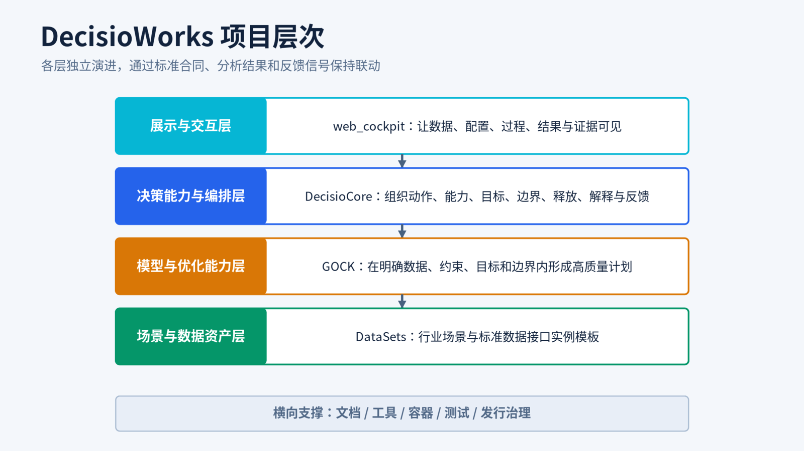

数据进入业务表达
订单、制品、工艺、产能、物料、日历与班制通过标准数据接口进入可计算结构。
- 数据语义
- 关系闭合
- 结构约束
PRODUCTION DECISION TOOLKIT
让行业数据、目标与规则、受控求解、结果解释和反馈联动进入同一条可运行、可复核、可持续迭代的能力链。
CAPABILITY CHAIN
生产决策的质量不只取决于一次求解。DecisioWorks 把输入、治理、求解和反馈组织成完整运行链路。
订单、制品、工艺、产能、物料、日历与班制通过标准数据接口进入可计算结构。
交付、负荷、库存和切换等目标，以及现场规则和瓶颈，被转化为可配置的决策要素。
DecisioCore 将决策要素稳定映射到 GOCK，在明确约束和运行资源内形成高质量计划。
总体指标与明细结果共同解释负荷、等待、短缺和偏差，并形成下一轮调整依据。
PROJECT STRUCTURE
业务、决策、模型与展示保持清晰职责，再通过稳定接口、分析结果和反馈信号保持联动。

SCENE EXAMPLES
样例用于说明输入数据、业务约束、运行流程和结果解释，不把能力藏在抽象概念里。
OPEN & EVOLUTION-FRIENDLY
DecisioWorks 允许数据来源、业务规则、能力编排、模型适配和应用界面分别演进。DecisioCore 作为开放参考实现，让伙伴可以理解、复用和扩展生产决策链路。
标准数据接口承接 ERP、MES、文件或现场数据，保持业务语义一致。
标准动作、能力注册和编排配方，让已有能力可以重新组织。
稳定适配层承接底层演进，降低算法变化对业务系统的冲击。
制造企业、咨询伙伴和集成商可以在共同底座上沉淀场景知识。
EDITIONS
研究版便于理解和验证工具包能力，商业版面向正式业务应用与持续运行。